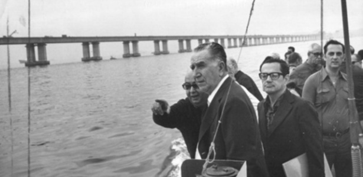
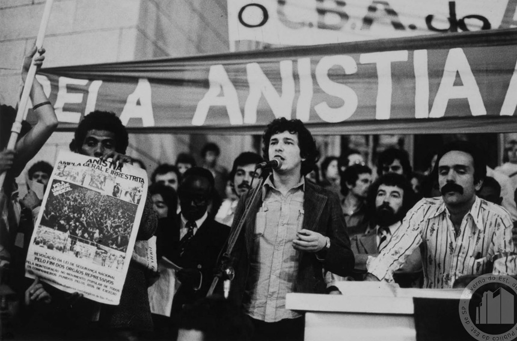
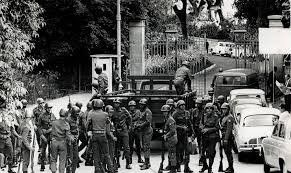

Como foi no Brasil?
No Brasil, o período mais recente de Ditadura Militar ocorreu entre os anos de 1964 e 1985. Sob o argumento de evitar uma ditadura comunista, no período da Guerra Fria, as Forças Armadas brasileiras realizaram um golpe de Estado em 31 de março de 1964, que depôs o presidente João Goulart. Eleito como vice-presidente em 1960, Jango (como era conhecido) havia assumido o poder após a renúncia de Quadros, em 1961.
Defendida pelos militares como uma ação revolucionária, a ditadura que vigorou no Brasil pode ser caracterizada como um regime civil-militar. Isso em decorrência da efetiva participação de setores importantes do empresariado brasileiro, principalmente os ligados aos grandes bancos e federações industriais do país.

Envolvimento dos EUA
Eram tempos de Guerra Fria e havia medo de um suposto “perigo comunista”. Assim, no conflito que começou logo após o final da Segunda Guerra Mundial e foi responsável pela bipolarização ideológica em que os Estados Unidos defensores do capitalismo e a União Soviética defensora do socialismo disputavam hegemonia econômica, política e militar no mundo.
Nesse cenário, os Estados Unidos, com medo da expansão socialista principalmente depois da Revolução Cubana passou a intervir ativamente nos países da América Latina para impedir o crescimento das ideias consideradas comunistas. As ditaduras militares na região foram então mecanismos para frear esses movimentos e tanto no Brasil, quanto em outros países latino americanos, foram apoiadas pelos Estados Unidos.
Em 2014, documentos liberados pelos Estados Unidos e investigados pela Comissão Nacional da Verdade revelaram que mais de 300 militares passaram uma temporada na Escola das Américas (o instituto de guerra dos Estados Unidos no Panamá). Lá, entre 1954 e 1996, os militares brasileiros tiveram aulas teóricas e práticas sobre tortura.
Além disso, gravações liberadas pela Casa Branca das conversas entre o ex-presidente John Kennedy e o embaixador do Brasil no momento Lincoln Gordon comprovam o envolvimento estadunidense na ditadura militar brasileira.

Castello Branco e os atos institucionais
No governo de Castello Branco (1964-67) foi declarado o primeiro ato institucional da Ditadura Militar no Brasil conhecido como AI 1!
Atos institucionais eram decretos e normas, muito utilizados durante a ditadura eles davam plenos poderes aos militares e garantiam a sua permanência no poder. Dentre as principais medidas asseguradas pelo AI 1 estava o fim das eleições diretas, isto é, a partir desse momento, as eleições para presidente seriam feitas pelo Congresso Nacional e não pela população. Nesse mesmo governo, as eleições diretas estaduais também foram suspensas e em 1967 uma nova Constituição entrou em vigor.
Em 1965 por meio do Ato Institucional nº 2 todos os partidos políticos foram fechados e foi adotado o bipartidarismo, ou seja, a partir desse momento passaram a existir apenas dois partidos: a Aliança Renovadora Nacional (ARENA) e o Movimento Democrático Brasileiro (MDB).
Enquanto o primeiro apoiava o governo, o segundo partido representava a oposição consentida (mas atenção: havia várias restrições à sua atuação!). Essa medida, ao mesmo tempo em que fortalecia o Poder Executivo, proporcionava uma imagem de legalidade à ditadura, pois mantinha o Congresso Nacional em funcionamento (apesar de ter sido fechado em alguns momentos).
Além disso, unir todos os partidos de oposição em apenas um partido político o MDB também foi uma estratégia dos militares de facilitar a repressão aos opositores do regime.
O AI-2 mudou ainda dispositivos constitucionais, alterando o funcionamento do Poder Judiciário e concentrando cada vez mais poder no Executivo.

Costa e Silva e o AI-5
O governo de Costa e Silva (1967-69) foi marcado por muita repressão, violência, tortura aos opositores do regime e restrição aos direitos políticos e à liberdade de expressão.
A insatisfação de parcelas da população com as medidas antidemocráticas fez crescer o número de manifestações, sendo uma das maiores a Passeata dos 100 mil. Nessa ocasião, o estudante Edson Luís foi morto em confronto com a polícia, o que gerou grande comoção e fortaleceu a oposição ao regime.
Em resposta, Costa e Silva promulgou o AI 5, que fechou o Congresso por tempo indeterminado; decretou estado de sítio; cassou mandatos de prefeitos e governadores e proibiu a realização de reuniões.
Como esse decreto dava o direito ao governo de punir arbitrariamente os inimigos do regime, é considerado o golpe mais duro da Ditadura Militar no Brasil. Nesse período, também conhecido como “anos de chumbo”, em resposta ao regime repressivo, começaram a surgir grupos armados, contra os quais houve forte repressão por parte dos militares.
Médici e o “milagre econômico”
O Governo de Médici (1969-74) é considerado o período de maior repressão da Ditadura Militar no Brasil. A censura dos meios de comunicação se intensificou e muitos prisioneiros políticos foram torturados. Afinal, os movimentos de oposição ao regime eram reprimidos por diversas frentes do governo militar.
Além disso, o período também ficou conhecido como o “milagre econômico”. Isso porque algumas medidas econômicas adotadas pelo governo como a restrição ao crédito, o aumento das tarifas do setor público, a contenção dos salários e direitos trabalhistas, e a redução da inflação resultaram em taxas de crescimento do PIB acima de 10% e grandes investimentos em infraestrutura.
Ainda, nesse momento foram construídas mais de 1 milhão de casas, financiadas pelo Banco Nacional de Habitação (BNH) e o setor de bens duráveis e eletrodomésticos cresceu. Por isso, a impressão que se passava a partir dos resultados dessas medidas era a de crescimento econômico, ou como se costuma chamar: “milagre econômico”.
O crescimento da economia somado à euforia após a conquista do tricampeonato mundial de futebol levou o governo militar a adotar campanhas publicitárias ufanistas, como “Brasil, ame-o ou deixe-o” ou “Ninguém mais segura esse país”. Você talvez já tenha ouvido falar delas, não é mesmo?
Esse “milagre”, no entanto, deixou uma dívida externa muito grande para o país equivalente hoje a uma dívida no valor de US$ 1,2 trilhão, muito maior que a atual, cujo valor registrado em 2017 foi de US$ 37,36 bilhões. Isso significa que o “milagre econômico” gerou na realidade a dependência brasileira por empréstimos externos nos anos que seguiram.
Além disso, o milagre foi acompanhado de maior desigualdade de renda. Ou seja, a riqueza se concentrou ainda mais nas mãos dos ricos e a camada de pobres da população teve sua situação econômica e social ainda mais precarizada. O Índice de Gini que mede a concentração de renda de um país alcançou em 1977 o pior nível da história, com o número de 0,62. Isso significa uma concentração de renda maior do que a registrada atualmente em países como Namíbia e Haiti!
Em 1973, houve a crise do petróleo no mercado internacional. Com o aumento do preço do combustível, a inflação no país continuou a subir e em 1974 a inflação era de quase 30% ao ano chegando a taxa de 242,24% ao final da ditadura. Além disso, os investimentos na economia brasileira caíram, reduzindo o consumo e a geração de empregos. Diante dessas dificuldades, o governo militar passa a perder apoio.
Em 1971, foi promulgado um decreto-lei que tornava ainda mais rígida a censura à imprensa, os grupos de esquerda sofriam fortes repressões e foram criadas instituições para lutar contra eles, como o Departamento de Operações Internas (DOI) e o Centro de Operação da Defesa Interna (CODI). Estes órgãos eram utilizados como centros de aprisionamento e tortura e estavam localizados nas principais cidades do Brasil.

Figueiredo e a Lei da Anistia
O Governo de Figueiredo (1979-85) durou 6 anos e colocou fim ao período ditatorial. Em 1979, foi promulgada a Lei de Anistia. Aos poucos, presos políticos foram sendo libertados e os exilados voltaram ao país.
Uma polêmica sobre a Lei de Anistia é que ela excluía os guerrilheiros condenados por atos terroristas, mas incluía os agentes de repressão policial e militar, responsáveis por violações aos direitos humanos, como torturas e mortes. A partir desse momento, tornou-se possível a criação de novos partidos políticos, muitos desses existem até hoje. Mas essa abertura do final do regime não era aceita por todos os militares, algumas alas desejavam manter a ordem vigente.
Considerado um ato de terrorismo, militares contrários à abertura explodiram uma bomba num centro de convenções no Rio de Janeiro durante uma comemoração ao dia do trabalho, em 1981. Neste caso também não houve investigações ou punições.
Ao final do mandato de Figueiredo, a população mobilizou-se pela realização das eleições diretas, pois segundo a Constituição, o sucessor seria eleito pelo Congresso. As demandas, no entanto, não foram atendidas. Tancredo Neves foi eleito por voto indireto e somente em 1989 a população brasileira teve o direito de votar diretamente para a presidência.

A resistência armada na ditadura militar brasileira
Durante a ditadura militar, motivados por ideais socialistas, foram criados grupos armados de esquerda que acreditavam que outro sistema poderia resolver as injustiças sociais geradas pelo capitalismo. Esse não foi um movimento exclusivo do Brasil, as revoluções armadas aconteceram ao longo da história, especialmente quando “pegar em armas” se mostrava como o único caminho possível para lutar contra o autoritarismo do regime militar.
Esses grupos agiam na clandestinidade e muitos guerrilheiros afastaram-se da vida civil para planejar e executar suas ações. Para combater a luta armada, os militares utilizaram inúmeros recursos jurídicos, políticos e militares. A tortura no período ditatorial brasileiro foi uma das formas utilizadas para conseguir informações sobre esses grupos e suas estratégias e enfraquecer sua atuação.

A cultura como resistência à ditadura militar
Nós já falamos sobre os grupos armados que lutavam contra a Ditadura Militar no Brasil e da Passeata dos 100 mil, uma mobilização que contou com apoio de diversos setores da sociedade. Mas não podemos deixar de lado que o período da ditadura foi de grande importância cultural e artística no país.
Apesar das restrições à liberdade de imprensa e de expressão impostas pela censura muitos artistas, músicos e cineastas manifestavam seu posicionamento contrário ao regime, ainda que de maneira metafórica para não serem condenados como opositores ao regime.
Tom Jobim, Vinícius de Moraes, Chico Buarque, Gilberto Gil e Veloso são exemplos de cantores e compositores que utilizaram a música para manifestar sua opinião. O Tropicalismo, por exemplo, foi um movimento forte de oposição à ditadura e de construção da identidade cultural brasileira. Diversos artistas, músicos e escritores foram exilados durante o período ditatorial.
Um dos exemplos de música que se referia (contra) a ditadura era “Apesar de você” de Chico Buarque. No princípio, os militares não perceberam que a letra era uma mensagem a eles e liberaram a canção, mas a população entendeu o recado e logo em seguida o governo militar proibiu a execução da música e destruiu os discos.